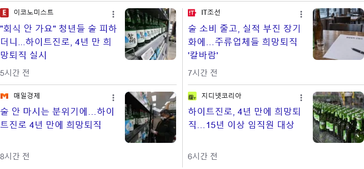

https://www.fmkorea.com/best/10544791712

요즘은 회식도 줄고 퇴근 후엔 술값 아껴서 자기가 좋아하는데 쓰는 사람이 많아짐
결국 술 출고량이 10년전보다 20% 넘게 빠졌고 하이트진로도 4년 만에 희망퇴직
https://www.fmkorea.com/best/10544791712

요즘은 회식도 줄고 퇴근 후엔 술값 아껴서 자기가 좋아하는데 쓰는 사람이 많아짐
결국 술 출고량이 10년전보다 20% 넘게 빠졌고 하이트진로도 4년 만에 희망퇴직
이게 정상화지
진작에 증류로 팔았으면 이런 일 없지 쓰레기 술 계속 팔아재끼고 감미료만 쳐 섞어대니 뭔 발전이 있나 ㅋㅋ
틀딱들만 마시니까
마셔도 괜찮은 외국산 맥주 마시지
오줌물 안마심
버드와이저보다 구린 맥주는 세계 최초일껄?
또 또 호들갑 염병
그래도 테라, 한맥, 클라우드는 괜찮았어
식당에서 소주 1병 맥주 1병을 5천 6천 받으니까
안사먹지ㅋㅋㅋ
전세계적인 흐름이더라 주류회사 매출감소
음식점의 뻥튀기된 술값도 한몫 거들었다 ㅋㅋㅋㅋ
소주한병에 3천원했어봐라 니기미 안주보다 비싼 술이 제정신이냐??
보이는게 다 가 아니였구먼
매번 먹골 지나갈때마다
사람많아서
진작 세금 정상화해서 주류시장 키웠으면 매니아층 잡고 해외에도 팔고 했을텐데 맛도 없고 비싸기만 하니까 시장이 죽어가잖아
위스키 먹게되니 집에서만 깔짝
진짜 차라리 위스키가 가성비 좀 집에서
진짜 술값 너무 비쌈 진짜 너무 비쌈
술 안마셔서 -10%
비싸서 -10%
술을 마신다는거 자체가 늙탱이라는뜻임